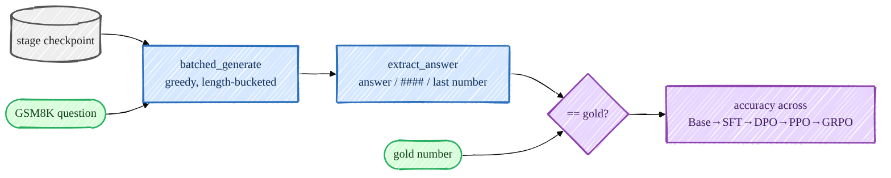

Evaluation¶
A pipeline is only believable if you can measure it, so I evaluate every stage on the same held-out GSM8K test set with greedy decoding. The headline deliverable is a single table: GSM8K accuracy as it moves Base → SFT → DPO → PPO → GRPO. The reward is verifiable — I parse the model's final number and compare it to the gold answer — so the score is objective, not a judgment call.

Mermaid source (live, editable)
flowchart LR
CK[(stage checkpoint)]:::ckpt --> GEN[batched_generate<br/>greedy, length-bucketed]:::proc
Q([GSM8K question]):::data --> GEN
GEN --> EX[extract_answer<br/>answer / #### / last number]:::proc
EX --> CMP{== gold?}:::eval
GOLD([gold number]):::data --> CMP
CMP --> ACC[accuracy across<br/>Base→SFT→DPO→PPO→GRPO]:::eval
classDef ckpt fill:#eeeeee,stroke:#555,stroke-width:2px,color:#222;
classDef proc fill:#d6e8ff,stroke:#2c6fbb,stroke-width:2px,color:#0d2c52;
classDef data fill:#d6ffd9,stroke:#27ae60,stroke-width:2px,color:#143d1a;
classDef eval fill:#e8d6ff,stroke:#8e44ad,stroke-width:2px,color:#3d1a5a;Generation: length-bucketed, greedy¶
The educational model has no padding-aware attention mask, so
batched_generate groups prompts of equal length and decodes
each bucket together; greedy=True forces argmax (top_k=1) for comparable, deterministic numbers.
Scoring: a verifiable reward¶
gsm8k_accuracy generates an answer per question and checks
it with the verifier:
prompts = [encode_prompt([{"role": "user", "content": q}]) for q, _ in qa_pairs]
responses = batched_generate(model, prompts, max_new_tokens, device=device, greedy=greedy)
correct = sum(is_correct(resp, gsm8k_gold_answer(ans)) for (q, ans), resp in zip(qa_pairs, responses))
The reward/checker lives in rewards/. extract_answer is tolerant —
it prefers an <answer>…</answer> tag, then a GSM8K-style #### N, then falls back to the last number
in the text — and reward_gsm8k is
correctness-dominant with only a small, bounded format bonus, to discourage reward hacking:
r = 0.0
if _answers_match(extract_answer(text), gold): r += 1.0 # the reward that matters
if has_well_formed_answer(text): r += 0.2 # small format nudge
return min(r, 1.2) # clipped
I sanity-checked this scorer independently of any model: feeding it correct answers scores 100/100 and wrong answers 0/100 false positives, with gold cross-verified against the live GSM8K dataset.
The across-stages table¶
eval_post_training.py loads any checkpoint (reading its dims from
the stored cfg), scores it, and appends a row to a JSONL you can render as a table:
for s in base_pretrained sft dpo ppo grpo; do
PYTHONPATH=. python scripts/eval_post_training.py --ckpt /ephemeral/ckpts/$s.pt \
--label $s --limit 200 --append /ephemeral/logs/stage_table.jsonl
done
PYTHONPATH=. python scripts/eval_post_training.py --table /ephemeral/logs/stage_table.jsonl
stage GSM8K acc n
------------------------------------
base_pretrained ... 200
sft ... 200
dpo ... 200
ppo ... 200
grpo ... 200
In-training metrics¶
Each trainer also writes a metrics JSONL under /ephemeral/logs/ (via
MetricsLogger) — train/dev loss for SFT, preference accuracy
for the reward model, implicit-reward accuracy for DPO, and reward/KL/clip-fraction + GSM8K accuracy for
PPO/GRPO. Pass --use_wandb true to also mirror to Weights & Biases; the JSONL is always written so you
can plot offline.
What "good" looks like at this scale¶
A ~400M from-scratch model won't top the GSM8K leaderboard — the point is the relative climb across stages and bounded KL during RL. Expect modest absolute numbers but a clear, real before/after gain at each step.
➡️ Next: talk to any checkpoint.